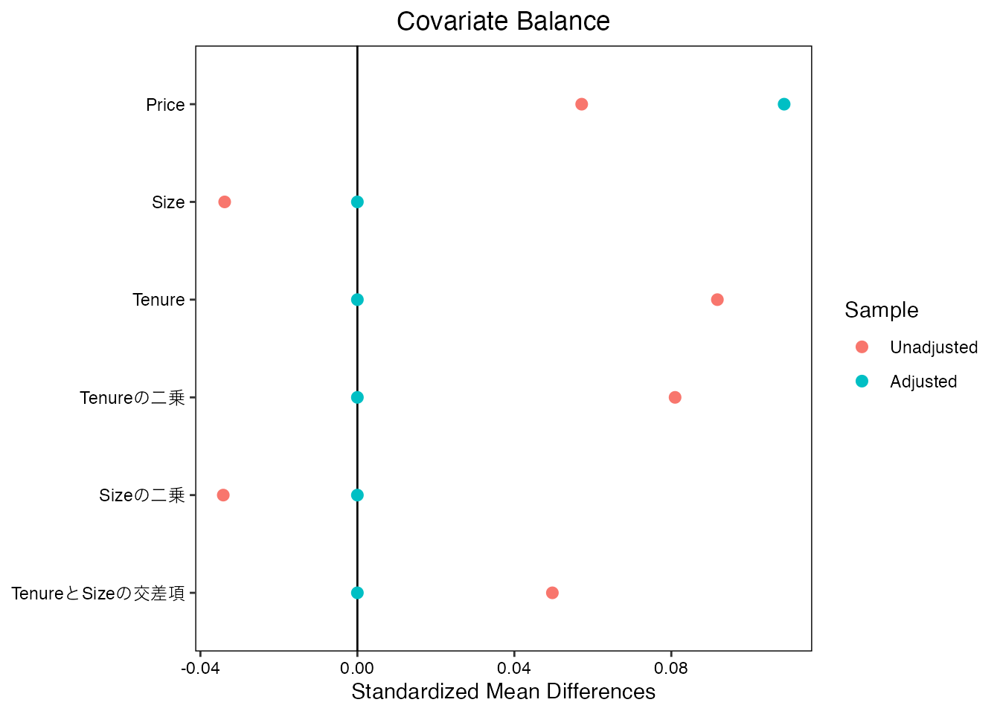
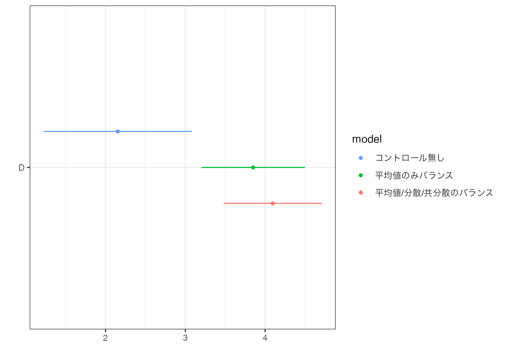
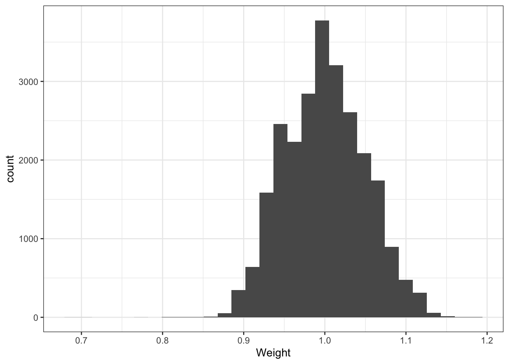
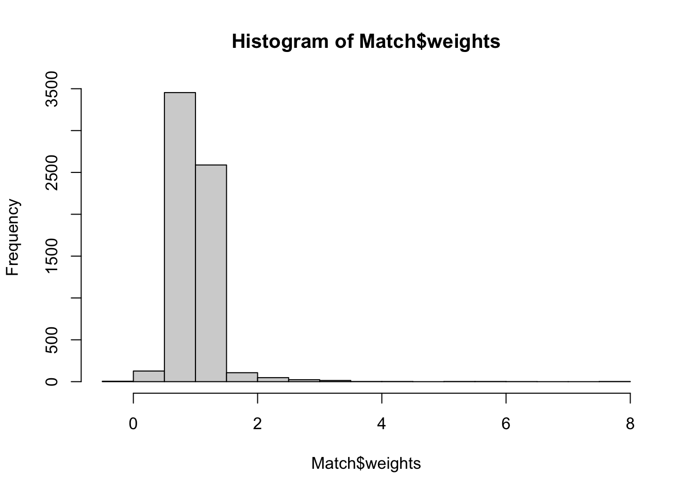
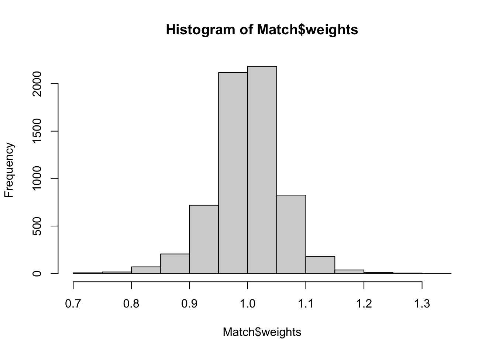
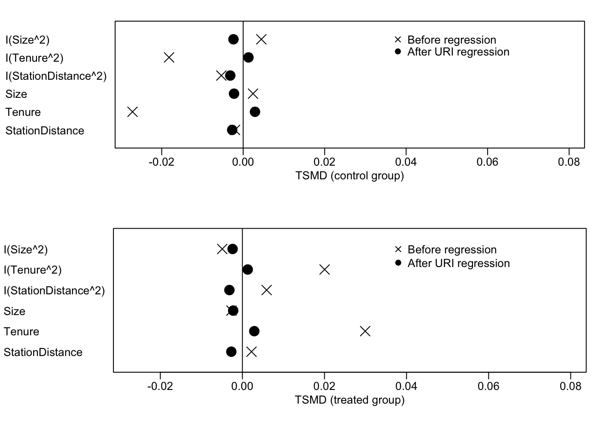

estimatr::lm_robust(
Y ~ D + Size + Tenure,
Data)4 OLSによる特徴のバランス
\(X\) の組み合わせが多く、Balancing weightsを計算することが困難な場合、\(X\)の分布を近似的にバランスさせることが有力です。
本節では代表的な統計手法であるOLS（重回帰）が、近似的なBalancing weightsを暗黙のうちに計算する手法であることを紹介します。 OLSは分布の特徴を、研究者が定める定式化に応じて、柔軟にBalanceされることができます。
4.1 OLSによる平均値のバランス
近年の研究により、線型モデルのOLS推定は、Moment Balanceを達成することが確認されています (Chattopadhyay and Zubizarreta 2023)。
本ノートでは以下、\(D=\{0,1\}\)を前提とします。
OLSの性質 (Chattopadhyay and Zubizarreta 2023)
- \(Y\sim D + X_1 + .. + X_L\) をOLSで推定し算出される \(D\) の係数値は、以下の方法で計算される値と完全に一致する
\[\beta_D=D=1における(\omega(x,1)\times Y)の平均値\]
\[-D=0における(\omega(x,0)\times Y)の平均値\]
\(\omega(x,d)\)は、OLSが暗黙のうちに算出する近似的なBalancing Weightsであり、以下の性質を持ちます。
- すべての\(X_l\) について
\[D=1における(\omega(x,1)\times X_l)の平均値\]
\[=D=0における(\omega(x,0)\times X_l)の平均値\]
- 上記を満たす\(\omega(x,d)\) の中で、最小の分散を持つWeights
重回帰による推定は、\(D\)間で\(X\) の平均値をバランスさせた上で、平均値を比較しています。 また最終的な推定結果の推定誤差に影響を与える、Weightの分散も可能な限り削減しています。
4.1.1 例
部屋の広さ (Size) と 築年数 (Tenure) をバランスさせた後に、2022/2021年の平均取引価格差を推定します。 \(Price\sim D + Size + Tenure\) をOLS回帰すると、以下のようなバランスが達成されます。

赤点 (Unadjusted) は、バランス前の単純平均差を表します。 価格が大きく上昇していますが、取引物件の部屋の広さは狭くなり、築年数は古くなっています。 青点 (Adjusted)は、OLSによる暗黙のバランス後の差を示しています。 結果、SizeやTenureの平均値は完全にバランスしており、結果平均取引価格差も上昇しています。 Tenure2やSize2は、築年数や部屋の広さの二乗項(分散)、Tenure_Sizeは交差項(共分散)を示しており、これらについてはOLSを行ったとしてもバランスしていません。
4.2 OLSによる分散や共分散のバランス
\(Price\sim D + Size + Tenure\) を推定しても、SizeやTenureの平均値のみしかバランスできません。 一見、これはOLSの致命的な弱点のように見えますが、簡単な修正のよって解決できます
分散や共分散もバランスさせるためには、二乗項や交差項もモデルに導入したモデル \(Price\sim D + Size + Tenure + Size^2 + Tenure^2 + Tenure\times Size\) をOLS推定します。 これによって、Sizeの二乗の”平均値”などもバランスさせることができます。 これは各変数の分散や共分散をバランスを意味します 結果、以下の図の通り、分散や共分散もBalanceします。
estimatr::lm_robust(
Y ~ D + Size + Tenure +
I(Size^2) + I(Tenure^2) +
(Size + Tenure)**2,
Data)
バランス後の平均差は、通常の
4.3 OLSの問題点と解決策
OLSにより暗黙のうちに計算されるWeightは、平均値をバランスします。 しかしながら、Balancing weightsに求められる他の性質は必ずしも満たされません。
4.3.1 Researcher degrees of freedom
OLSにおいては、分布の特徴をどこまでバランスさせるのかが問題となります。 事例数が十分あれば、3乗項などの高次項もバランスさせることは可能です。 しかしながら事例数が少ない場合、大量のモーメントをバランスさせると、推定誤差が大きくなってしまいます。 このため十分な根拠を持った推定モデルの定式化が困難になります。
このような問題に対して、OLS推定を行う前に重要な変数のみを選択することが必要となります。 変数選択を行う方法としては、Chernozhukov, Hansen, and Spindler (2015) がPost Double Selectionというデータ主導の手法を提案しており、幅広く応用されています。 Angrist and Frandsen (2022) は、変数選択について、より入門的な紹介を行っています。
4.3.2 ターゲットの解釈の難しさ
バランス後の、\(X\) の平均値がどのような水準になるのか、一般に不透明です。 結果を解釈するためには、\(X\) の平均値は明確な水準、例えばデータ全体での平均値と一致させることが望まれます。 しかしながら、OLSはそのような水準との一致を保証しません。
OLSによるバランス後の\(X\)の平均値について、lmw packageにより診断できます。

黒丸はOLSによるバランス後、ばつ印はバランス前の平均値を示しています。 Control groupは、\(D=0\) (2021年)、Treatment groupは、\(D=1\) (2022年)の値です。 0線は、サンプル平均を示しています。
同図からバランス前は、2022年についてはSizeがサンプル平均よりも小さく、Tenureは長くなっています。 黒丸を見るとOLSによるバランス後は、2022年と2021年の間で平均差がなくなることが確認できます。 ただし０線からは乖離しており、サンプル平均とは一致していないことが確認できます。
4.3.3 負の荷重
Balancing weightsは、正の値を取ることが望まれます。 しかしながらOLSが生成するWeightは、負の値を取る可能性があり、ミスリーデイングな推定結果をもたらす可能性があります。
lmw packageは、OLSが生成するweightsの値を計算します。 例えばhist関数により、ヒストグラムとして可視化できます。

本応用例では、負のweightsは発生していないことが確認できました。
4.3.4 解決策
\(D\)と\(X\)の交差項を含めた以下のモデルを推定した、\(\beta_{D},..,\beta_{DL}\)の平均値は、サンプル全体の\(X\)の平均値とバランス後の平均値を一致させるWeightを活用した平均の差と一致します(Chattopadhyay and Zubizarreta 2023)。 \[Y\sim D\times (\beta_D + \beta_{D1}X_1+..+\beta_{DLX_L}) + \beta_0 + \beta_1X_1+..+\beta_LX_L.\] ただし負のweightは以前として生じる可能性があります。
より根本的な解決策は、Entropy weights (Hainmueller 2012) や Stable weights (Zubizarreta 2015) などを利用することです。 これらの手法では、サンプル平均との一致や正の値を取ることを条件として課した上で、weightを計算します。 このためOLSが持つ問題点の多くを克服しており、より信頼できるバランス後の比較分析が可能です。 これらの手法は WeightIt package (Greifer 2024) で容易に実装できます。
4.4 Rによる実践例
\(D\)と\(X\)の交差項を含めたモデルのOLS推定、およびその性質の診断は、以下のパッケージを用いて実装できます。
readr (tidyverseに同梱): データの読み込み
lmw: OLSが計算するbalance weightsを計算
estimatr: OLSをRobust standard errorとともに計算
dotwhisker: 信頼区間の可視化
4.4.1 準備
データを取得します。 \(D\) として、取引年が2022か2021かで、1/0となる変数を定義します。 シンプルな比較分析について信頼区間は、データ分割は不要です。
Data = readr::read_csv("Public.csv") # データ読み込み
Data = dplyr::mutate(
Data,
D = dplyr::if_else(
TradeYear == 2022,1,0
) # 2022年に取引されれば1、2021年に取引されていれば0
)4.4.2 OLSによるバランス
\(D\) 間でSize,Tenure,StationDistanceの平均値をバランスさせ、Priceの平均値を比較します。
Model = estimatr::lm_robust(
Price ~ D + Size + Tenure + StationDistance,
Data)
dotwhisker::dwplot(
Model,
vars_order = "D"
) +
theme_bw()
\(D\) の係数値は3.29であり、20.06ほど中心6区の物件の方が平均取引価格が高いことがわかります。
次に各変数の分散と共分散もバランスさせます
ModelLong = estimatr::lm_robust(
Price ~ D +
(Size + Tenure + StationDistance)**2 + # 交差項の作成
I(Size^2) + I(Tenure^2) + I(StationDistance^2), # 分散
Data)バランスをしない単純比較も含めて、推定結果を比較すると以下のようになる。
ModelSimple = estimatr::lm_robust(
Price ~ D,
Data) # バランスなし
dotwhisker::dwplot(
list(
バランスなし = ModelSimple,
平均のみ = Model,
`平均/分散/共分散` = ModelLong
),
vars_order = "D"
) +
theme_bw()4.4.2.1 Balanced Weight
lmw パッケージのlmw関数を用いれば、OLSが算出しているBalance weightsを計算できます。
Match = lmw::lmw(
~ D + I(Size^2) + I(Tenure^2) + I(StationDistance^2) +
(Size + Tenure + StationDistance)**2, # 平均、分散、共分散をバランス
Data
) # Weightの算出
hist(Match$weights) # Weightのヒストグラムを算出
負のWeightが発生していないことが確認できます。
データ全体での平均値との乖離も、以下のとおり確認できます。
plot(summary(Match), abs = FALSE)